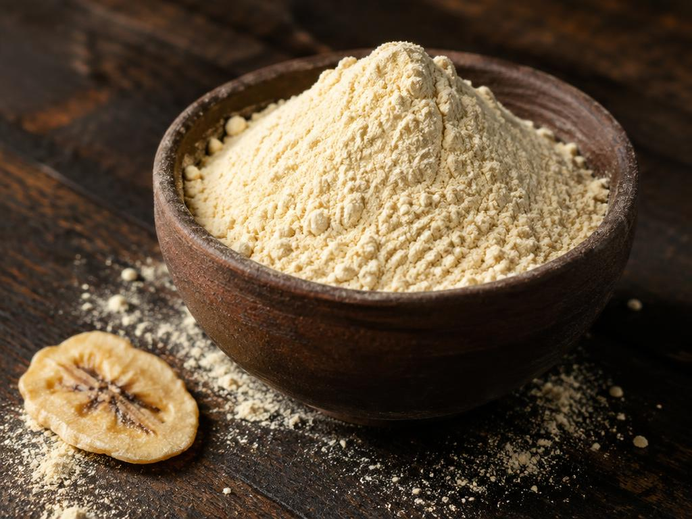
Dehydrated Banana Powder
Mild, naturally sweet base powder
SEND ENQUIRYB2B Bulk Supply · Nellore, Andhra Pradesh
Sasvata supplies bulk dehydrated fruit and vegetable powders to companies — produced on order, batch tested to FSSAI standards, with nothing added.
Send EnquiryEvery batch is tested against FSSAI standards before it leaves our facility.
Competitive bulk pricing on every product, with no compromise on grade.
No added colours. No preservatives. No artificial sweeteners.
We buy produce directly from farmers and move it in our own trucks.
About Sasvata
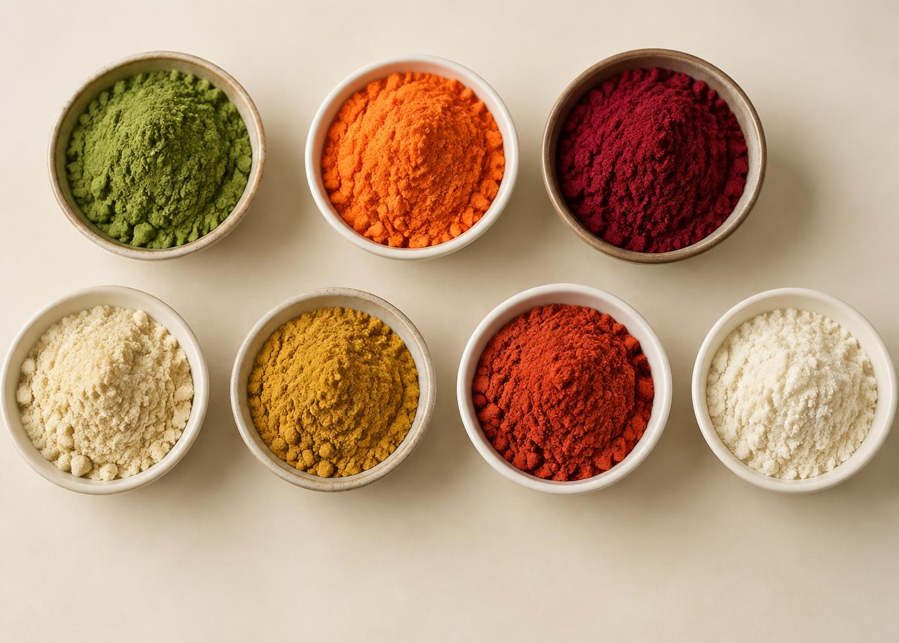
Sasvata offers the “Best of Dry Food Powders”. It was Pagadala Praveen who started the company in Nellore, Andhra Pradesh with the idea of dehydrating food powder. As a result, we created a seasonal business that would allow consumers to purchase large quantities of dried fruit and vegetable powder on the market.
As of today, most of our products are sold through wholesale order. In spite of the fact that we are a startup organization, we adhere to regulatory standards in terms of qualitative and quantitative values. Our products are of the highest quality and we provide excellent customer service.
We also strive to ensure that our prices are competitive. Our ultimate goal is to provide a healthy and sustainable choice for our clients. We offer end-to-end service that few can deliver on, and our product portfolio is among the most robust in the industry.
We ensure 100% satisfaction guaranteed for our clients.
Trade Ready
Sasvata Foods holds the licences required to serve domestic and international bulk buyers.
Delivery Record
Ginger supplied across three 40-foot high-cube container shipments.
Products
Particle size, packaging format and batch size are set by your requirement. Send an enquiry against any product below.

Mild, naturally sweet base powder
SEND ENQUIRY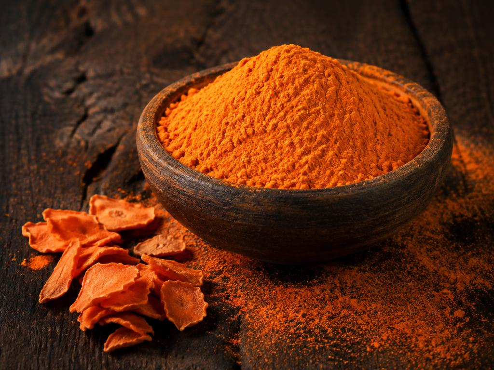
Beta-carotene rich, bright orange
SEND ENQUIRY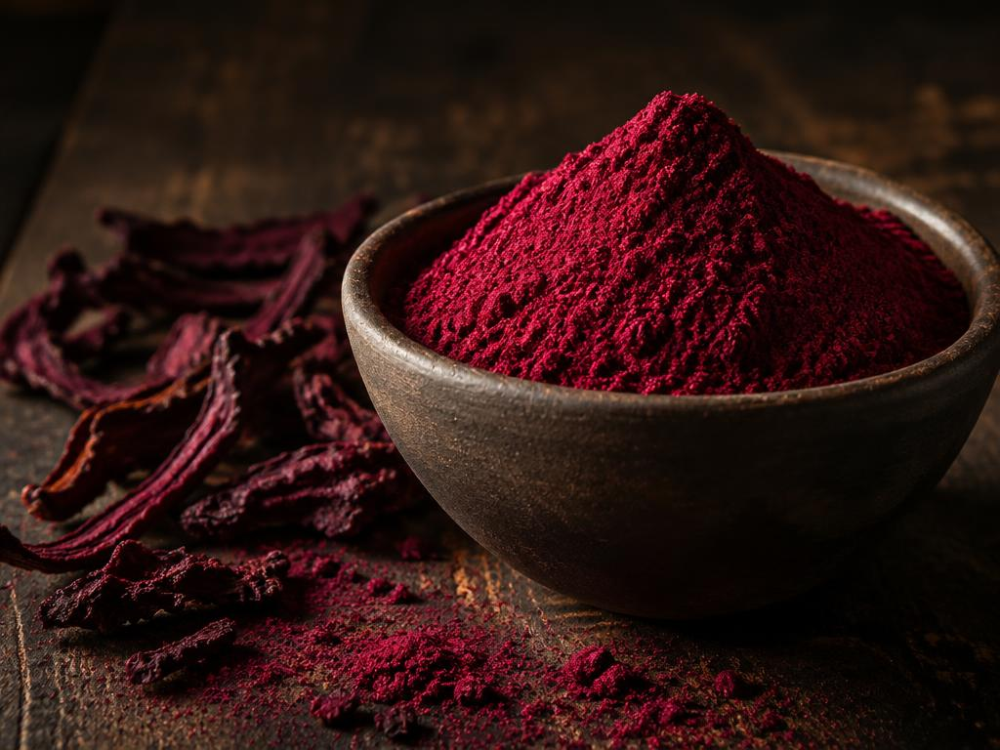
Deep natural colour, earthy sweetness
SEND ENQUIRY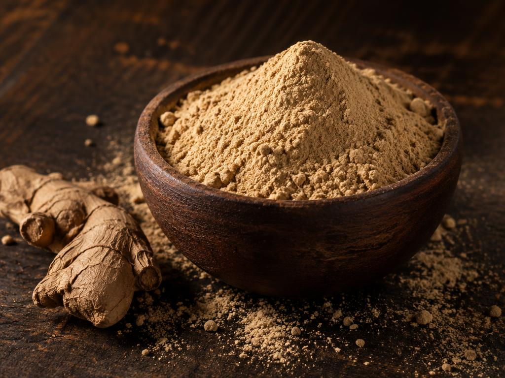
Aromatic, pungent, spice grade
SEND ENQUIRY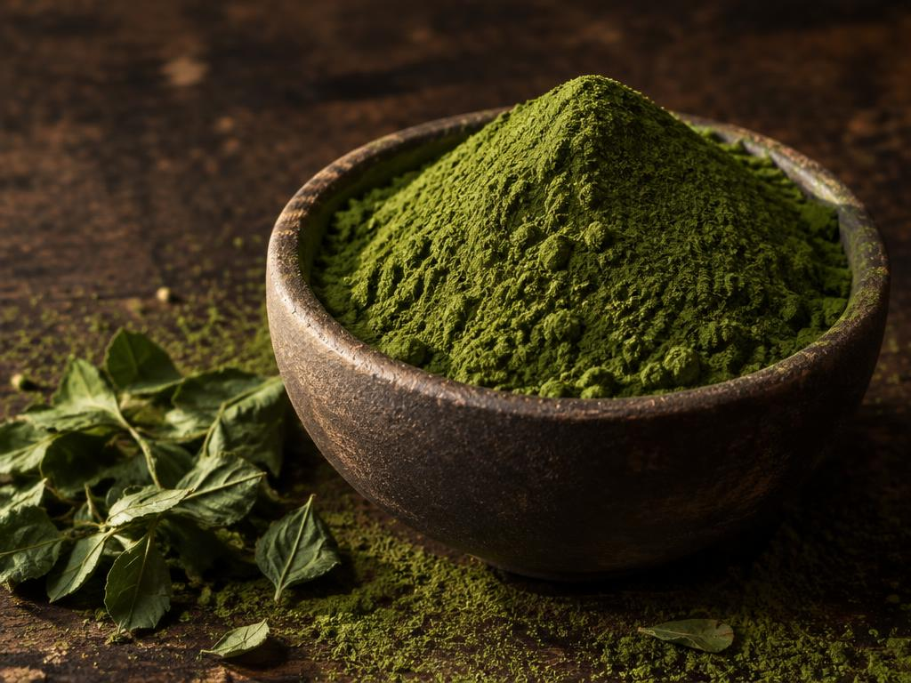
Leaf powder, high nutritional value
SEND ENQUIRY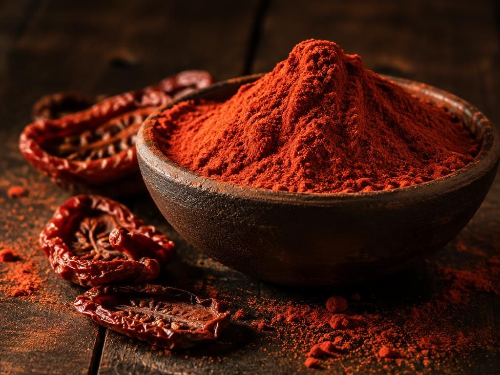
Tangy, lycopene rich
SEND ENQUIRY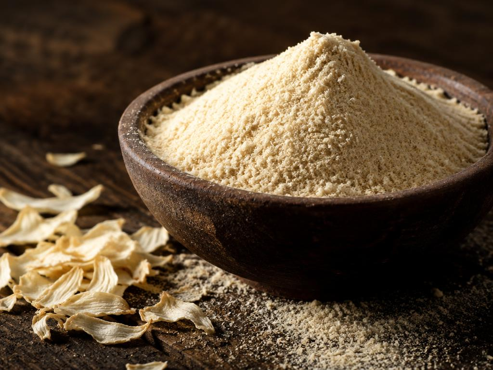
Savoury, free flowing
SEND ENQUIRYWhat We Do
Every order moves through the same disciplined line — from the farmer's field to sieved, bulk-packed powder ready for dispatch.
Stage 01
We work directly with local farmers to select high-quality, fresh produce. Once quality meets our standards we purchase it and transport it from the farms to our processing facility in our own trucks — freshness kept intact from farm to factory.
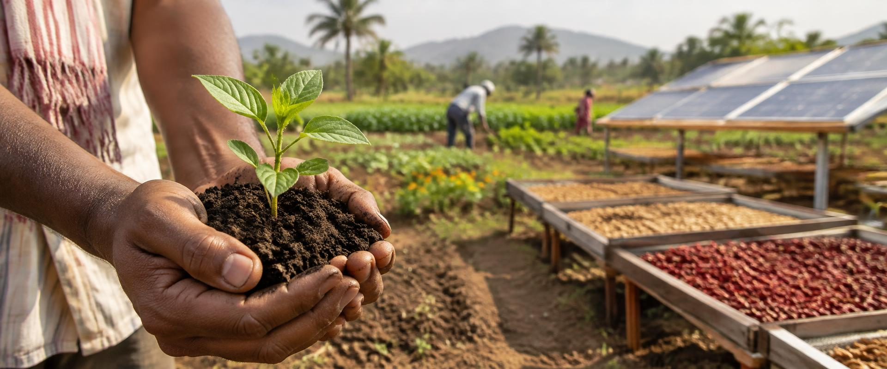
Stage 02
Produce is meticulously washed in a bubble washer to eliminate dirt, pesticides and other impurities.
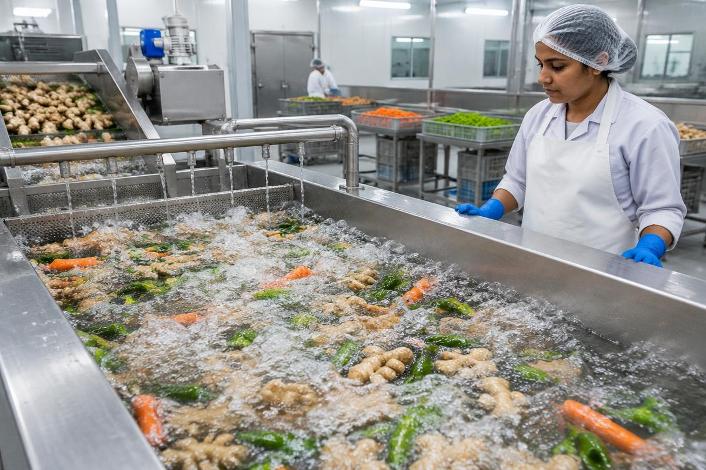
Stage 03
Depending on the fruit or vegetable, produce is peeled and cut into uniform pieces to allow even drying. In some cases peeling is omitted.
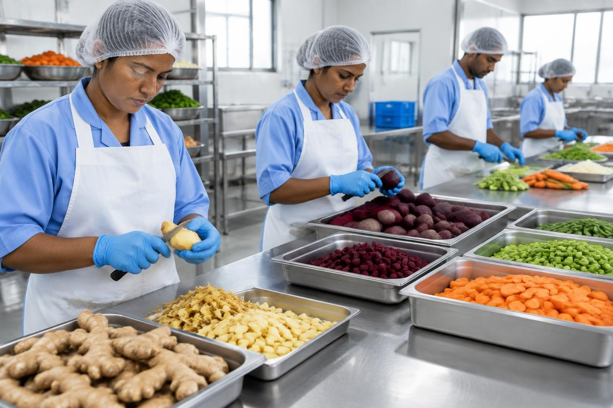
Stage 04
Prepared pieces are dried using the method best suited to the produce and the season.
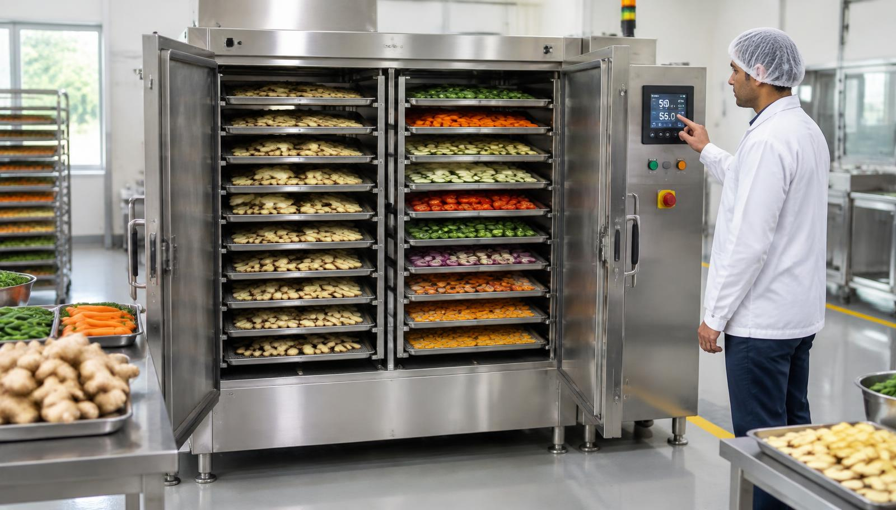
Stage 05
Dried fruits, vegetables and grains are finely ground in hygienic, controlled conditions for a consistent texture and particle size, suitable for powders, food ingredients and varied applications.
Stage 06
After grinding, the product is sieved to a uniform particle size according to each client's specification, then bulk packed in the sizes and formats that suit safe handling, storage and transportation.
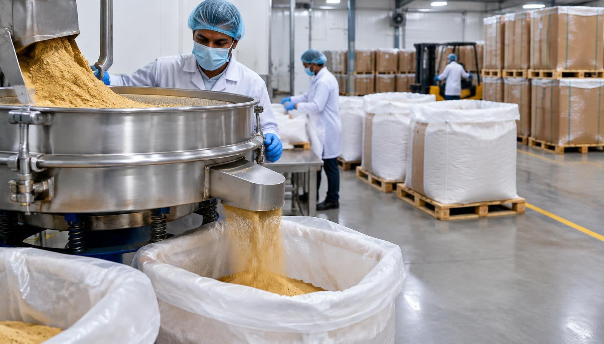
Stage 07
We follow an order-based production model rather than holding long-term inventory. Finished product is held briefly in a clean, cool, dry environment to preserve quality and freshness until dispatch.
Production runs against your order, not against our shelf.
No added colours, preservatives or artificial sweetness.
Packaging sizes and formats tailored to each customer.
“Our mission is the driving force behind our passion for our work.”
Our Team
Our team brings together experienced professionals across Quality Control, Food Safety & Quality Assurance, R&D, Product Development and Production. With expertise at every stage, our teams work together to deliver products that meet client specifications and business requirements.
Our Quality Control Coordinators and Food Safety & Quality Assurance professionals maintain consistent quality, food safety and process compliance — giving clients greater confidence in every batch.
Our R&D and Product teams focus on product development, customization and process improvement, responding to specific product, particle size, processing and application requirements. Our Production Heads and Production Leads oversee manufacturing to maintain consistency, efficient execution and reliable order fulfilment.
Controlled processes help deliver uniform products from batch to batch.
Our R&D and product teams work with clients to meet specific product and application needs.
Dedicated quality and food safety teams support compliance and product reliability.
Experienced production teams help ensure orders are executed efficiently to agreed requirements.
Cross-functional teams address requirements, quality expectations and development needs together.
We build dependable relationships through consistent products, clear communication and reliable execution.
Enquiry
Share your product, quantity and application. Our team will come back with specification, packaging options and pricing for your bulk order.